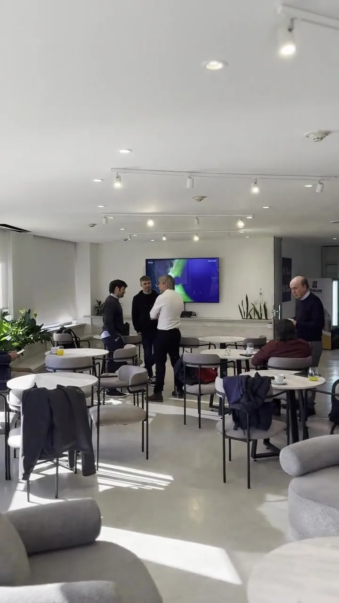

Nosotros
Una tesorería externa, con nombre y apellido.
Patagon Advisors nació para acompañar a empresas, directivos y familias con la cercanía de un asesor de confianza y el rigor de una mesa profesional.
Criterio profesional, atención directa.
No somos un banco, ni un bróker masivo, ni una fintech. Somos una firma de asesoramiento financiero: un equipo reducido de socios que atiende personalmente cada cuenta, entiende el negocio de cada cliente y estructura servicios que no salen de un catálogo.
Nuestro asesoramiento es independiente: no comercializamos productos propios. Antes de recomendar, explicamos cómo se cobra cada instrumento y qué alternativas existen, sin conflictos de interés asociados a la venta.
Funcionamos, en la práctica, como una tesorería externa para empresas y sus directivos: seguimos de cerca los flujos, anticipamos vencimientos y buscamos eficiencia en cada decisión financiera, con la misma disciplina que aplicaríamos a nuestro propio patrimonio.
Usamos inteligencia artificial como herramienta complementaria para el análisis de datos y el monitoreo de mercados. La tecnología acelera el trabajo de análisis; el criterio profesional de los socios sigue siendo quien decide.



Los socios detrás de cada decisión.
Un equipo reducido, con formación en mercado de capitales y matrícula ante la CNV.